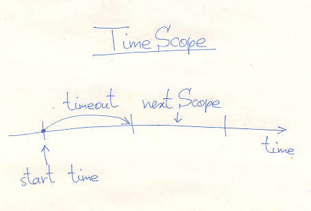

Files CCore/inc/TimeScope.h CCore/src/TimeScope.cpp
There are timed functions, i.g. functions with a specified execution time limit. For example, a semaphore has the method take() with timeout. In some cases you have to call several such functions. Then the problem arises, how to specify timeouts to them, if we want to fit in some common time limit. The class TimeScope is designed to solve this problem. It is a simple class, which represents some time interval:

class TimeScope
{
MSecTimer timer;
MSec timeout;
public:
explicit TimeScope(MSec timeout_=Null) : timeout(timeout_) {}
void start(MSec timeout_);
bool nextScope();
MSec get() const;
};
TimeScope contains inside a millisecond timer and a millisecond timeout. It is started at the moment of construction, or at the moment when the method start() is called. You can retrieve the remaining time, using the method get(). If the given timeout is expired, then the get() returns 0.
Assume, you have to make an aggregated timed operation. Using TimeScope you can do it simply like this:
void func(TimeScope time_scope)
{
op1(time_scope);
op2(time_scope);
op3(time_scope);
}
void func(MSec timeout)
{
TimeScope time_scope(timeout);
op1(time_scope);
op2(time_scope);
op3(time_scope);
}
You may suggest the following approach:
void func(MSec timeout)
{
TimeScope time_scope(timeout);
op1(time_scope.get());
op2(time_scope.get());
op3(time_scope.get());
}
But this way does not ensure the expected behavior, because from the point you call the method get() to the point, where this value is consumed inside the opx() a task switch may happens and it increases the amount of time by an unpredictable value. That is why in CCore we provide timed functions with simple timeouts and with TimeScope timeouts, especially for all synchronization objects. In HCore the implementation is not precise (but HCore does not pretend to be a true real-time), but XCore has an exact implementation.
The remaining method is nextScope(). It does the following: if the timeout is expired, then nextScope() shifts the time period to the following scope and returns true, otherwise it simply returns false.
bool nextScope()
{
auto t=timer.get();
if( t >= +timeout )
{
timer.shift(+timeout);
return true;
}
return false;
}